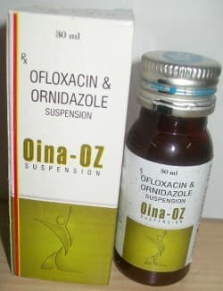

×

Saar Biotech Pvt. Ltd. is a distinguished WHO-GMP certified pharmaceutical manufacturing
company
in Baddi,
Chandigarh, renowned for its dedication to quality and innovation. Since 2005, we have been
at
the
forefront of the industry, operating from our state-of-the-art facility in Baddi, with a central
office
in Chandigarh.
Specializing in third-party contract manufacturing, we partner with over 1700 clients to
deliver
a wide
range of pharmaceutical products, including Suspensions,Syrups, Ointments, Roll Ons, covering
various
therapeutic segments. Our extensive experience and advanced technology make us a trusted
choice
for
companies seeking reliable manufacturing solutions.
At Saar Biotech, quality and service are our top priorities. Our stringent quality
standards ensure each
product meets regulatory requirements and exceeds customer expectations. We are committed to
providing
the best service and product quality in the industry.
Join us at Saar Biotech, where health and quality converge. Experience the difference of partnering
with
a leader in pharmaceutical excellence. Quote Now to start your journey with us.
Ofloxacin:
Ofloxacin is a quinolone antibiotic used for treating certain kinds of bacterial infections(ear
infections, urinary tract infections) and also useful in pelvic inflammatory disease (PID). It
belongs to the fluoroquinolone class of antibiotics. Ofloxacin stops the multiplication of bacteria
by inhibiting the reproduction and repair of their genetic material (DNA).
Ornidazole:
Ornidazole is a nitroimidazole which is an antibacterial and antiprotozoal drug used to treat
anaerobic enteric protozoa. It is a drug that cures some protozoan infections like (Giardiasis,
Trichomoniasis). This antibacterial agent effective against a wide variety of gram-negative and
gram-positive aerobic bacteria.
It has been demonstrated by recent studies concomitant administration of an antibiotic
(Ofloxacin) and antiprotozoal (Ornidazole), shows better symptoms relief compared with the
modest improvement of infections with each of the treatments.
Ofloxacin:
Ofloxacin:
Ornidazole:
The antimicrobial activity of ornidazole is due to the reduction of the nitro group to a more
reactive amine that attacks microbial DNA, brings about loss of helical structure of DNA and
subsequent DNA breakage thus inhibiting further synthesis and causing degradation of existing
DNA.
Ofloxacin :
Inhibits the enzyme Bacterial DNA gyrase. It has activity against C.trachomatis, M.leprae,
M.tuberculosis and other Mycobacterium spp.
Before taking this medicine tell the doctor about any medical problems an allergies that child has
now or has had.
This suspension is the combination of Ofloxacin and ornidazole and has unique dual mode of action
i.e., in the combination, ofloxacin may increase the anticoagulant effect of acenocoumarol and
anisindione. Calcium salts such as calcium acetate may decrease the absorption of quinolone
antibiotics such as ofloxacin. Of concern only with oral administration of both agents. Potentiates
effect of coumarin-type oral anticoagulants.prolongs the muscle-relaxant effect of vacuronium
bromide.
Common side effects include:
Neurological disorders, Blood dyscrasiae, Caution when used during pregnancy, Caution when used during lactation.
Concomitant use with alcohol should be avoided.
From the above discussion it can be conclude that this Ofloxacin & Ornidazole suspension could
improve the quality of life of children’s with infections as well as Diarrhea, Peritonitis ( A
combination of ofloxacin & ornidazole can also be used to treat Hansen's Disease, or leprosy).
Moreover it has a considerable safety profile, with persistent results.
Disclaimer: The data uploaded is made from content already available on internet. The company holds no right of it and is not responsible for any wrong information.